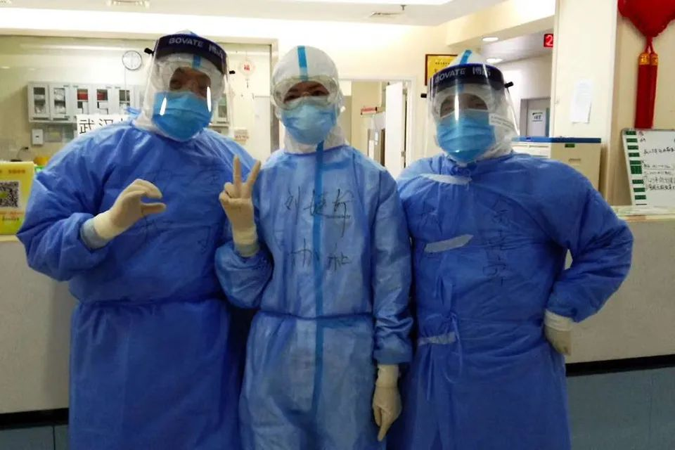
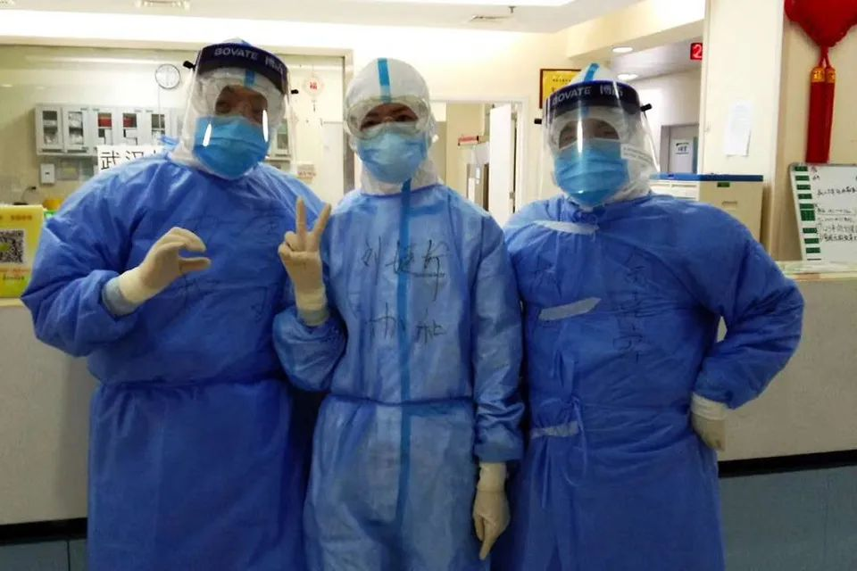

火线 | 叫“肺炎”其实轻视了这种疾病——专访北京协和医院刘正印教授
原文链接 备份链接 口述实录·火线 记者 | 黄 祺 天上飘着武汉冬季常见的冰冷细雨，湿冷的空气可以从袖口、领口任何漏风的位置渗到人的皮肤，带走体温。这一天是大年初二，最高气温3度。春节前积压未诊断的新冠肺炎病人，其中一部分已经转为重症， …
 ***************************************▲*************手术结束后，李琦(左一)和同事合影。 （受访者供图/图）
***************************************▲*************手术结束后，李琦(左一)和同事合影。 （受访者供图/图）
全文共2141字，阅读大约需要5分钟。
我们判断，等待复杂的流程转运到手术室，怕是等不及了。我们决定，把病人所在的单间隔离病房，作为临时手术室，直接在床边做微创手术。
如果用电钻，病人的骨末和血液的飞沫，会扩散得到处都是，对在场的医护人员，以及整个病房来说都很危险。所以只能用手钻，可以控制钻的速度以及用力的程度，尽量减轻喷溅的程度。
本文首发于南方周末 未经授权 不得转载
文 | 南方周末特派记者组
南方周末实习生 龚柔善
责任编辑 | 钱昊平
2020年2月17日，中国疾控中心“新冠肺炎应急响应机制流行病学组”，在《中华流行病学杂志》发表的文章指出，中国确诊新冠肺炎患者中，53%的患者并未报告其基础性疾病情况。
对于患有其它基础性疾病的新冠肺炎患者而言，他们的境况更加危险，医生在抢救这类病患过程中，面临的感染风险和救治难度都会更高。
2月22日，武汉市协和医院西院区神经外科主治医师李琦接受南方周末记者采访，讲述一次抢救有基础疾病患者的过程。2月21日凌晨，一位患有“慢性硬膜下血肿”的新冠肺炎病人突发“脑疝”，在李琦和同事的全力抢救下，病人成功脱险。
以下为他的自述：
2月21日凌晨，我在协和西院6楼的隔离病房值完班，脱下防护服后，心情稍微放松。刚换完衣服，一个电话打过来，说西院11楼东病区，有一名慢性硬膜下血肿的病人陷入昏迷，让我立即过去抢救。
刚脱下的防护服赶紧又穿起来，搭乘电梯赶到11楼东。
慢性硬膜下血肿是老年人群体的多发疾病。脑萎缩之后，脑组织和颅骨之间的间隙增宽，头部受到轻微撞击就会出血，当出血量累积到一定程度，便压迫正常的脑组织，进而影响呼吸和心跳，我们称这种情况为脑疝。当天那位老人的突发状况就是脑疝。
脑疝意味着病人已处于生死线边缘，随时都可能去世。由于病人是新冠肺炎患者，住在重症隔离病房，结合病人早前CT影像和身体情况，我们判断，等待复杂的流程转运到手术室，怕是等不及了。
必须马上把堆积在脑内的血放出来，脑组织才能回归到原位。
0时30分，我们决定，把病人所在的单间隔离病房，作为临时手术室，直接在床边做微创手术。
脑疝是脑外科最紧急的手术，对同时出现脑疝和新冠肺炎的患者实施手术，主要有两个难点。
一个是消毒，平时我们用碘伏消毒就可以，但对于新冠患者的手术，需要用碘酒和酒精，反复消毒6次。再一个，是对房间的消毒，包括床单、病人物品的消毒。颅内是一个闭合系统，脑里边最干净，你把它打开之后，跟外界相通，感染的风险很高。
第二就是防护。这场手术必须上三级防护，戴外科或N95口罩、面屏，除了防护服之外，我们还必须要穿隔离衣，和一次性的手术衣。最外层是一次性无菌手术衣，和最外层的无菌手套一样，都是为了保护病人。不能光想着保护自己，还得要保护病人。
刘婕妤护士当天也是值班到夜里12点，我告诉她先不要离开医院，准备去11楼做手术，余光宏医生从附近的酒店赶到医院，这场手术由我们3个人配合完成。我们在换防护服的同时，赵华主任将这次手术所需要的部分微创器械，从汉口开车送过来。
15分钟后，器械到达协和西院，我们直接带着手术器械，到达11楼病房，0时50分，手术开始。
头发是我给剃的。在外面剪头发是用电推剪，现在医院条件不允许，一时也找不到。再一个，电推剪推得不干净，会有头发茬留在上面，一般都是用医院备皮刀。
因为不能预计手术的效果，我们一般会把头发全部剃光。如果微创效果不好，发现脑内大出血，要做开颅的准备，所以，必须先把头发全剃光。如果放了引流管再去剃头，第一程序过于繁琐，第二感染的风险会高很多。
我们先要用颅骨钻把颅骨钻开，放置一个引流管，让脑内的血顺着引流管出来，否则血越积越多，呼吸中枢受压过紧，就会停止呼吸，这就是脑疝导致死亡的原因。
颅骨钻有两种，一种是电钻，一种是手钻，手钻就是手动的。但是这个病人，没有用电钻，因为电钻产生的气溶胶很多。
这是和我们平常做手术不同的地方，如果用电钻，病人的骨末和血液的飞沫，会扩散得到处都是，对在场的医护人员，以及整个病房来说都很危险。所以只能用手钻，可以控制钻的速度以及用力的程度，尽量减轻喷溅的程度。
手钻要求很高，如果钻得过深，就会导致新的出血和新的损伤，如果钻得过浅，后续的引流管放不进去，如果孔太大，那就失去了微创的意义。
而且这次还有一个新的挑战，平常我们戴一层手套，钻的时候手感很好。但是，现在要戴三层外科手套，手会更紧，而且也没有触感，对深度的把握要差很多，在钻的过程中，能明显感觉到手感跟平常是不一样的。
钻到最后一层时，我们三个人都很紧张，病房里，大家屏息凝视。
引流管管径是4毫米，孔径是5毫米，多出来的这1毫米，就是医生放管的空间。钻的时候，骨孔必须保证管子刚好能够进去，而且角度合适。置管的时候，由于没有太大的活动空间，我们要保证它准确地从骨孔穿过去，然后置放在合适的位置。
如果引流管放得到位，通过脑组织自身的脑活动，就可以把血排出来。21日的手术置管非常顺利。管子约30公分长，整个过程一共引流70毫升的血，持续时间约两个小时。
最初，病人对我们的提问答非所问，而且，出现了嗜睡的症状，在抢救之前，甚至陷入昏迷状态。凌晨1时20分，手术结束，我们把消毒铺巾移开，呼唤病人，他慢慢睁开眼睛，而且能够说自己的名字，这意味着手术成功了。


原文链接 备份链接 口述实录·火线 记者 | 黄 祺 天上飘着武汉冬季常见的冰冷细雨，湿冷的空气可以从袖口、领口任何漏风的位置渗到人的皮肤，带走体温。这一天是大年初二，最高气温3度。春节前积压未诊断的新冠肺炎病人，其中一部分已经转为重症， …
原文链接 备份链接 龙华医院、市中医医院接管的C5病区46位患者，经中医治疗后，大多数患者第一次新型冠状病毒核酸检测结果已呈阴性，其中，最严重两例危重病患者采用“截断扭转”防治策略，一例患者趋于痊愈，另一例病情较前明显好转。 记者 | …
原文链接 备份链接 【财新网】（记者 马丹萌 实习记者 何京蔚）49岁的武汉人李平（化名）已经昏迷了一个月，先后辗转三家医院，却迟迟没有得到脑外科医生的有效救治。 62岁的赵康（化名）年前因为肾结石在武汉市第一医院做了输尿管内的支架引流管 …
原文链接 备份链接 【财新网】（记者 马丹萌 实习记者 何京蔚）49岁的武汉人李平（化名）已经昏迷了一个月，先后辗转三家医院，却迟迟没有得到脑外科医生的有效救治。 62岁的赵康（化名）年前因为肾结石在武汉市第一医院做了输尿管内的支架引流管 …
原文链接 备份链接 致敬所有奋战在一线的医护人员。 武汉的一月，气温总在10度以下，阴雨天气占了大半。2020年1月14日那天，不仅有雨，还有三到四级的风。武汉协和东西湖医院重症监护室（ICU）主任袁海涛和他的同事，推着一个因病毒性肺炎插 …